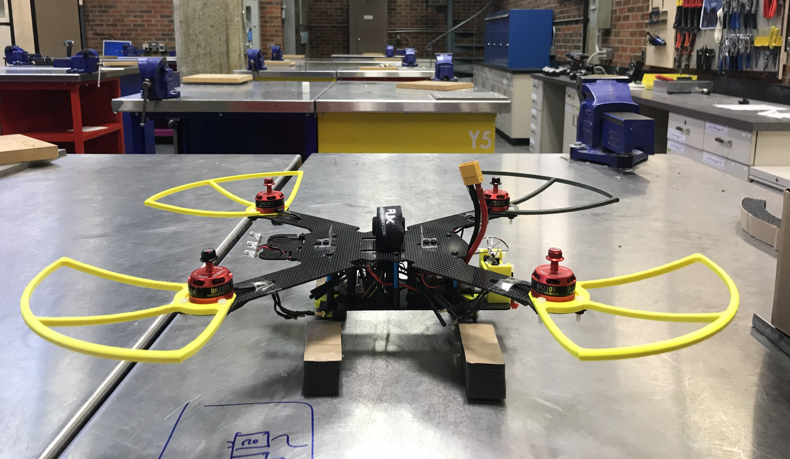
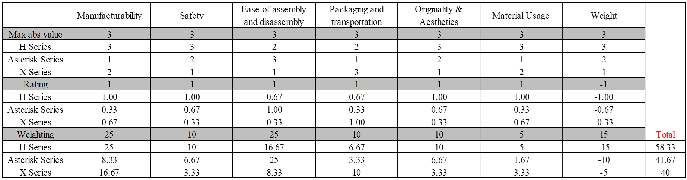
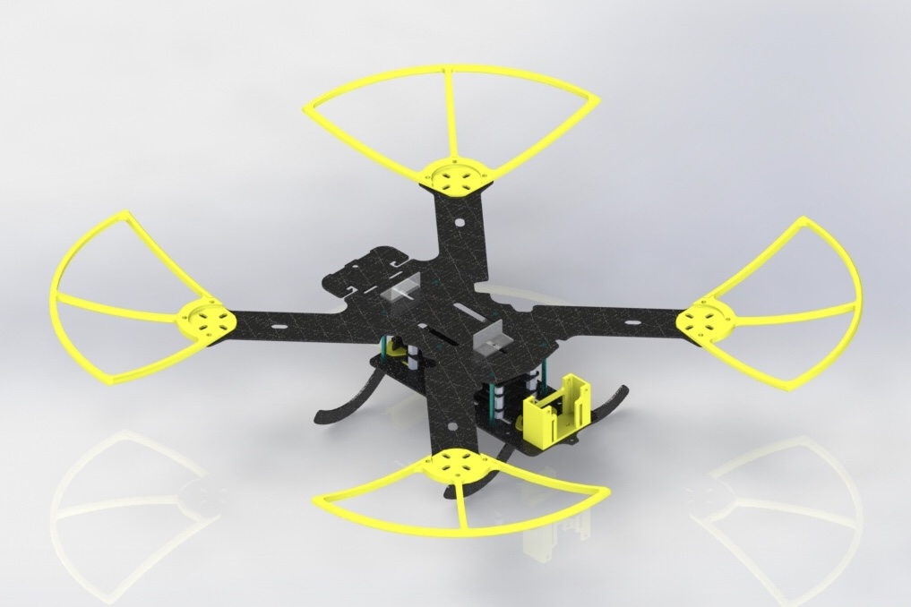
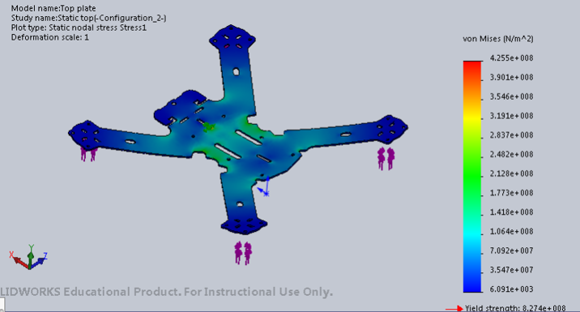
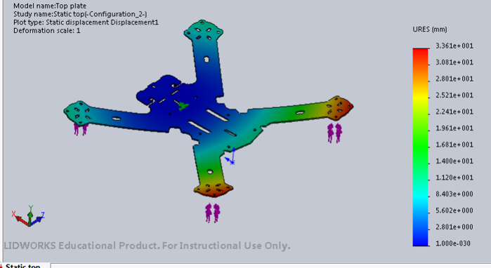
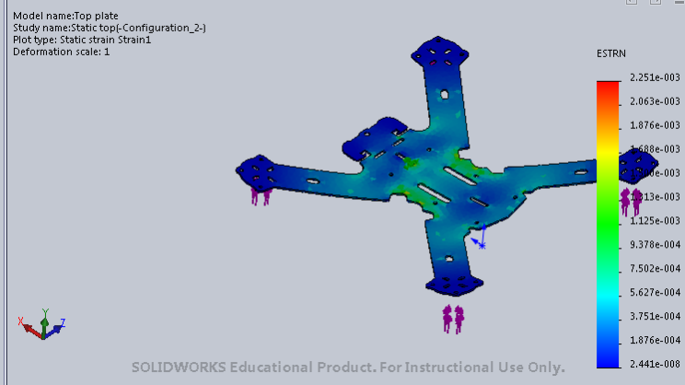
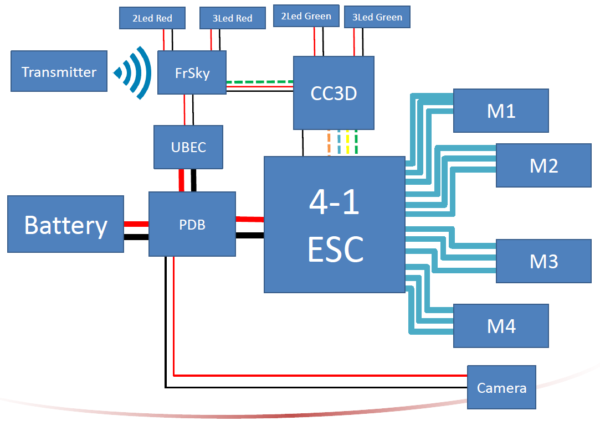
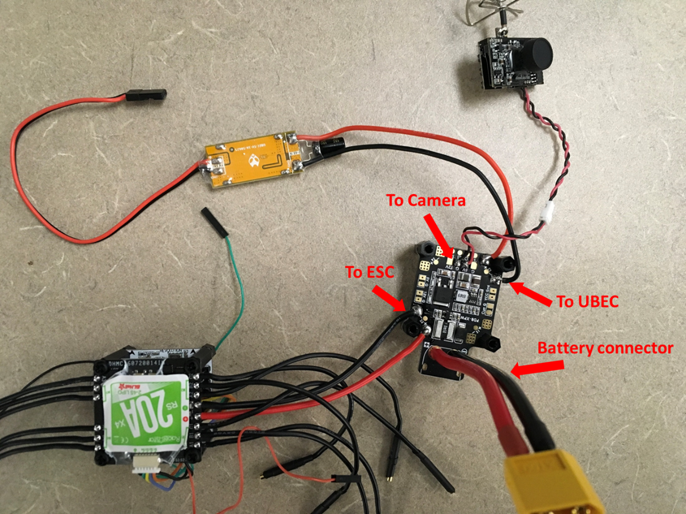
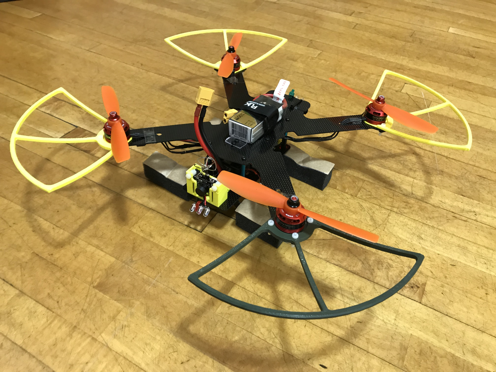
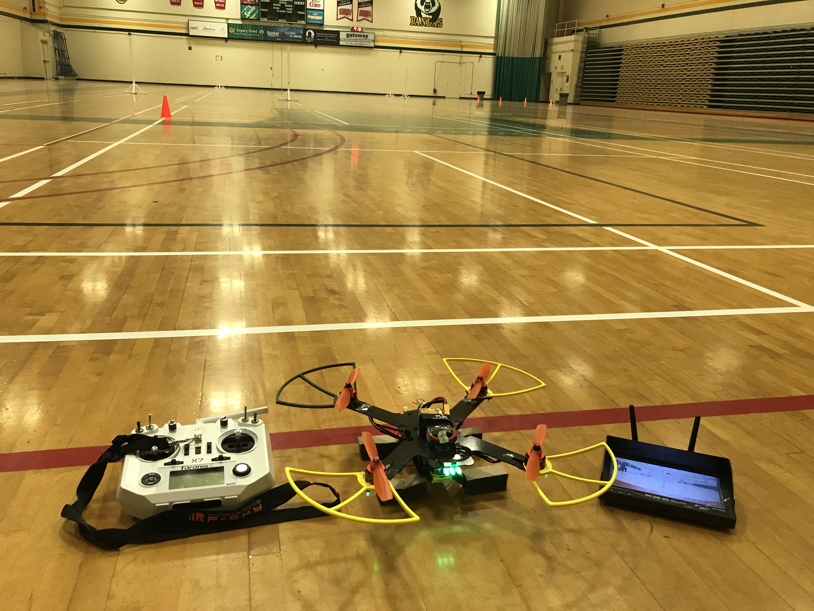

Indoor Quad Racer
This project was undertaken by a design team of three students. The objective of the project was
to design and build a quadcopter with an onboard camera that is able to fly safely in an indoor
environment and is controlled by a radio controller. The quadcopter should be able to fly along
the prescribed path and should be able to capture images of the targets and relay these images
back to the observer. The quadcopter should meet all the design requirements and follow the
design for manufacturing principles.

Description of Project
In this project, our team accomplished the following tasks:
Translated the customer requirements in the design specifications and function structures, and
made a Gantt chart for the project.
Proposed and analyzed three conceptual designs and made an evaluation matrix to select the final
design.

Generated a 3D model of the final design in SolidWorks and ran simulations for static analysis
of stress, displacement and strain.




Made drawings of parts and assemblies of the quadcopter with GD&T and created BOM.
Manufactured the main body and landing gear with carbon fiber by water-jet cut.
Manufactured the camera mount and propeller guards by 3D printing.
Ran thrust analysis to ensure that the propellers can provide enough thrust for lifting and
hovering.
Soldered and connected electrical components such as battery, PDB, UBEC, ESC, CC3D, Receiver,
Motors, Camera, LEDs, etc.


Setup the quadcopter CC3D flight controller with OpenPilot GCS Software and connected the
receiver with transmitter.
Tested electric power subsystem, control subsystem, vision subsystem and structural subsystem.
Evaluated design for assembly and disassembly, and design for maintenance and modularity.


Result

On the test day, the quadcopter was able to fly along the prescribed path and land safely. The image
or filming relayed from the camera was clear. However, the quadcopter drifted backwards due to the
location of center of gravity. Besides, the remote control was too sensitive because the motor
thrust was calibrated at a high intial value. The pilot might also need more practice. Overall, the
quadcopter performed well and met customer requirements and expectations.
Exploration
Mathematical model of quadcopter and PID and LQR control.